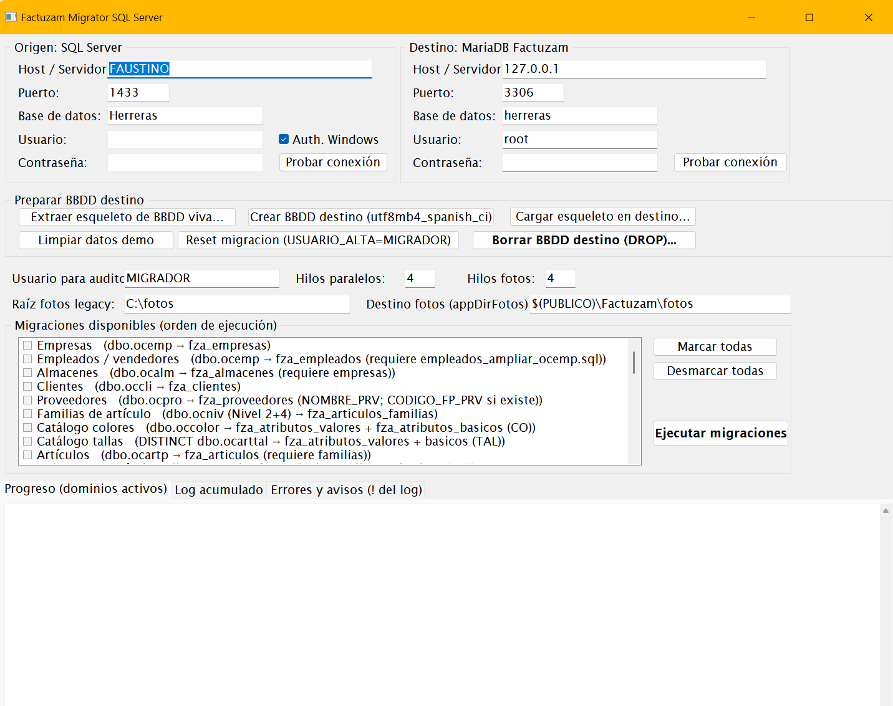
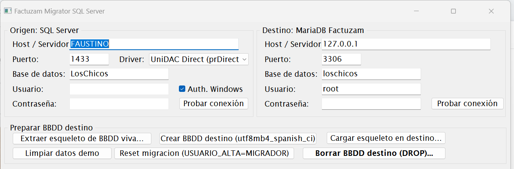
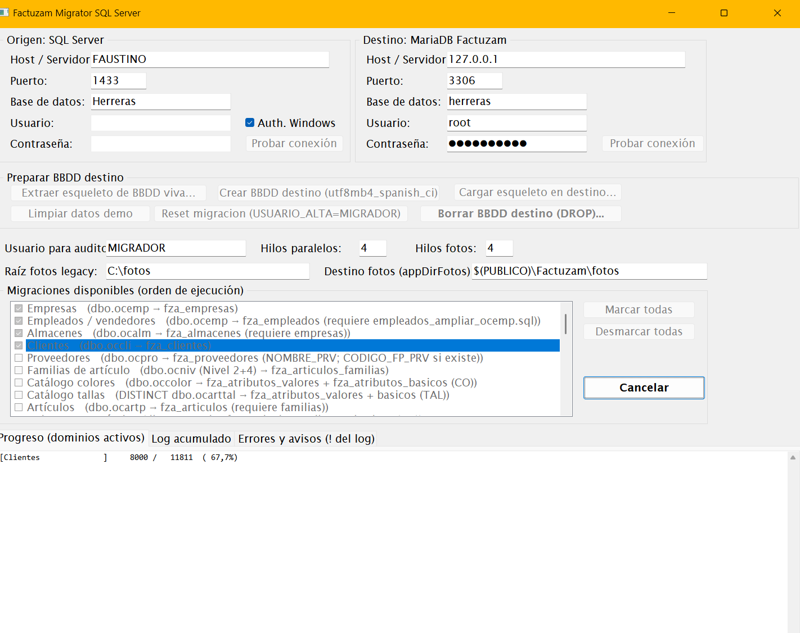

10 · Migración desde software legacy
Factuzam incluye una herramienta independiente, el Factuzam Migrator
(FactuzamMigrator.exe), que traslada los datos del ERP anterior
(base de datos SQL Server) a la base de datos factuzam
(MariaDB). Este capítulo explica qué migra, cómo preparar la base de
datos destino y cómo ejecutar y verificar la migración.
Es una operación de administrador, que normalmente se hace una sola vez en la puesta en marcha. Requiere acceso a las dos bases de datos (la antigua y la nueva).
1. Qué es y qué necesita
- Programa separado de
fzam.exe: se ejecuta solo durante la migración y no forma parte del trabajo diario. - Conecta a la vez con:
- Origen: la base de datos SQL Server del software anterior.
- Destino: la base de datos
factuzamen MariaDB.
- Guarda la configuración de conexiones (sin contraseñas) en
%USERPROFILE%\Factuzam\migrator.ini.

2. Qué datos migra
El migrador traslada, respetando el orden de dependencias, los siguientes dominios:
| Dominio | Qué se migra |
|---|---|
| Formas de pago, Grupos de IVA, IVAs | Catálogos base. |
| Empresas | Empresas emisoras. |
| Almacenes | Almacenes (y sus cajas, series y contadores). |
| Clientes | Ficha completa de clientes. |
| Proveedores | Ficha completa de proveedores. |
| Familias | Secciones y familias de artículos (con su jerarquía). |
| Colores y tallas | Catálogos maestros de atributos. |
| Artículos | Catálogo de artículos. |
| Colores/tallas por artículo, tallajes | Asignaciones de variación por artículo. |
| SKUs | Variantes vendibles + códigos de barras. |
| Inventarios | Inventarios y sus líneas. |
| Movimientos | Movimientos de almacén (y reconstruye el stock actual). |
| Ventas (caja) | Operaciones de caja, pagos y depósitos de cliente. |
| Facturas | Facturas y sus líneas. |
| Compras | Pedidos, albaranes, devoluciones a proveedor y facturas de compra. |
| Cartera de pagos | Efectos de compra y remesas de pago a proveedor. |
| Empleados | Operarios de caja, traspasos y arqueos, separados de los usuarios de login. |
La migración corre en paralelo por oleadas: los dominios sin dependencias entre sí se procesan a la vez, y cada oleada espera a que termine la anterior (catálogos → maestros → variantes → documentos).
3. Preparar la base de datos destino
El propio Migrator trae una sección «Preparar BBDD destino» con tres botones, pensada para crear la base nueva sin depender de ficheros externos:
- Extraer esqueleto de BBDD viva… — conecta a una base
factuzamde referencia y genera un.sqlcon toda la estructura (tablas, vistas, procedimientos) y los datos de las tablas de sistema (países, tipos de IVA, ventanas, metadatos…). Las tablas de negocio (artículos, clientes, facturas…) van vacías porque las rellenará la migración. - Crear BBDD destino — crea la base de datos indicada en el panel Destino con juego de caracteres
utf8mb4y cotejamientoutf8mb4_spanish_ci. - Cargar esqueleto en destino… — vuelca el
.sqldel paso 1 en la base recién creada.

Alternativa: crear la base destino desde
factuzam_original.sqlcomo en la instalación. En ese caso, asegúrate de aplicar también los scripts de esquema requeridos por el migrador si tu dump es anterior a ellos (ampliaciones de códigos de cliente, nombre de proveedor, jerarquía de familias, líneas de inventario, empleados, compras, facturas de compra y cartera de pagos).
4. Ejecutar la migración paso a paso
- Copia de seguridad de ambas bases de datos (origen y destino).
- Abre
FactuzamMigrator.exe. - Configura el panel Origen (SQL Server): host, puerto, base de datos, usuario y contraseña. Pulsa Probar conexión.
- Configura el panel Destino (MariaDB) igual, y prueba la conexión.
- Marca las migraciones a ejecutar. La lista ya respeta el orden de dependencias; para una migración completa, márcalas todas. En compras, los dominios entran después de maestros y SKUs: pedidos, albaranes, devoluciones a proveedor, facturas de compra, efectos y remesas de pago.
- Pulsa Ejecutar migraciones. Durante el proceso:
- El panel de progreso muestra una línea por dominio activo con su contador
X / Y (Z %)en tiempo real. - El botón cambia a Cancelar: si lo pulsas, termina el dominio en curso y se detiene (lo ya migrado queda hecho).
- El panel de progreso muestra una línea por dominio activo con su contador
- Al terminar, revisa el resumen y el panel de errores.

Re-ejecución segura (idempotencia)
Las migraciones son idempotentes: si un registro ya existe en destino se salta (se contabiliza como «saltado») y se continúa. Cada dominio se ejecuta dentro de una transacción: si algo falla, se deshace ese dominio completo (los demás siguen). Por tanto, ante un fallo puntual se puede corregir la causa y volver a ejecutar sin duplicar datos.
Log de errores
Cada ejecución deja registro en tres sitios:
- El log general de la pantalla (todo el detalle).
- El panel rojo de errores (solo errores y avisos).
- Un fichero
migrator_errores_AAAAMMDD_HHMMSS.logen%USERPROFILE%\Factuzam\, para revisarlo después (la ruta exacta se imprime en el log al iniciar).
5. Ajustes manuales después de migrar
La primera versión del migrador aplica algunas heurísticas que conviene repasar a mano una vez terminada la migración:
| Dato | Qué hace el migrador | Qué revisar después |
|---|---|---|
| Tipos de IVA | El legacy guarda histórico por fechas; se toma el porcentaje mayor como IVA normal y se dejan a 0 el reducido/súper/exento. | Completar los porcentajes reducido, superreducido y exento en Otros ▸ Impuesto IVA. |
| Código de almacén | El legacy indexa por (empresa, almacén); el destino exige código único global. Se genera E<empresa>-A<almacén>. | Renombrar códigos si se prefiere otra nomenclatura. |
| Tipo de IVA por artículo | El legacy guarda un entero; se migra todo como IVA Normal (N). | Marcar los artículos con IVA reducido/súper/exento. |
| Forma de pago del cliente | Se usa el código de efecto del legacy como código de forma de pago. | Verificar que las formas de pago migradas tienen la descripción y comportamiento deseados. |
| Familias | Secciones y familias del legacy van a la misma tabla, conservando la jerarquía sección → familia. | Revisar el árbol de familias resultante. |
| Conjuntos de tallas por artículo | Se migran los catálogos y las asignaciones de color/talla, pero no el conjunto concreto de tallas de cada artículo. | Asignar el conjunto de atributos a los artículos que lo necesiten (Archivo ▸ Tablas Auxiliares ▸ Colecciones de Atributos). |
| Compras históricas | Los pedidos, albaranes, devoluciones y facturas se reconstruyen con una línea por SKU y su tallaje pivotado. | Abrir muestras en Compras y revisar proveedor, almacén, estado, totales e impuestos. |
| Efectos de compra | Los vencimientos legacy se importan y se concilian cuando ya constan pagados. | Revisar efectos pendientes, pagados y remesas antes de empezar a operar. |
6. Verificación final
Antes de dar la migración por buena:
- Cuadra los totales: nº de clientes, proveedores, artículos, SKUs y facturas entre origen y destino (el resumen del migrador muestra los contadores de insertados/saltados/errores por dominio).
- Stock: compara el stock de una muestra de artículos con el sistema antiguo (Almacén ▸ Informes). El migrador reconstruye el stock a partir de los movimientos.
- Documentos: abre algunas facturas, operaciones de caja y compras migradas y comprueba importes e impuestos.
- Ventas de prueba: haz un ticket de prueba en el TPV y una factura de prueba en Ventas Mayor.
- Cartera: revisa efectos y remesas de compra para comprobar vencimientos, estados y bancos.
- Aplica los ajustes manuales de la sección anterior.
- Haz una copia de seguridad de la base ya migrada: es tu punto de partida oficial.
Hasta completar la verificación, conserva el software y la base de datos antiguos en solo lectura como referencia histórica.
◀ Instalación en Windows · Índice · Siguiente ▶ Verifactu (AEAT)